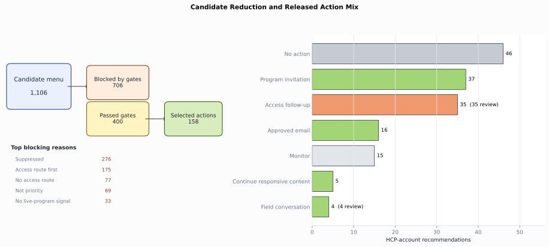
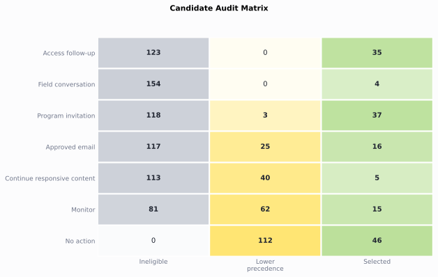
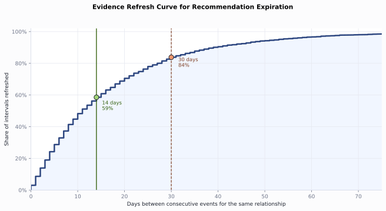
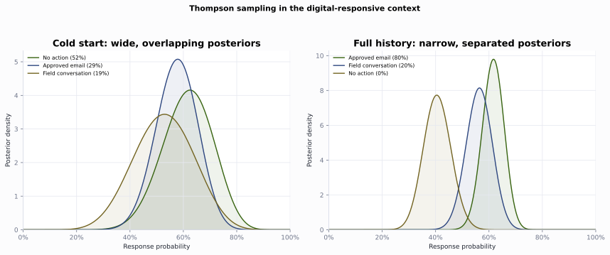

Next Best Action
Turn the omnichannel channel-plan state into one governed recommendation per HCP-account relationship. Generate a candidate menu, gate it, resolve by precedence, rank inside the gates with response and uplift, attach a recommendation contract, then add a bandit, an off-policy check, and the experiment that would settle the policy question. The carried case is HCP0280 at account ACC089.
from pathlib import Path
import sys
import pandas as pd
ROOT = Path.cwd().resolve()
if not (ROOT / "pyproject.toml").exists():
ROOT = ROOT.parent
sys.path.insert(0, str(ROOT))
from ch09_nba.scripts.next_best_action import run_analysis # noqa: E402
pd.set_option("display.width", 200)
pd.set_option("display.max_columns", None)
results = run_analysis(ROOT)
print(f"Recommendations: {len(results['recommendations'])}")
print(f"Candidates: {len(results['action_candidates'])}")
Recommendations: 158
Candidates: 1106
Candidate set
candidates = results["action_candidates"]
trace = candidates.loc[candidates.npi.eq("9000000280")]
print(trace[[
"candidate_action", "eligible", "policy_precedence", "reason_code"
]].to_string(index=False))
candidate_action eligible policy_precedence reason_code
No action True 90 No higher-precedence eligible action passed
Access follow-up False 10 Account evidence points to access friction
Field conversation False 20 Priority relationship with permitted field capacity
Program invitation False 25 Prior live-program attendance supports a repeat invitation
Approved email True 30 Available email frequency with a priority or digital signal
Continue responsive content True 40 Meaningful digital response without a higher-priority action
Monitor True 80 Eligible relationship without a stronger action signal

Figure 9.1. HCP0280 starts with 7 candidates; the gate removes access, field, and program actions, then precedence selects approved email and records the rejected alternatives. Synthetic data.
Eligibility gates
reasons = [
"Suppressed", "Access route first", "Not priority",
"No live-program signal", "Passed",
]
gate_summary = results["gate_summary"].set_index("ineligibility_reason")
print(gate_summary.loc[reasons].reset_index().to_string(index=False))
ineligibility_reason blocked_candidates
Suppressed 276
Access route first 175
Not priority 69
No live-program signal 33
Passed 400
Policy precedence
summary = results["recommendation_summary"].copy()
summary["mean_predicted_response"] = summary.mean_predicted_response.round(3)
print(summary.to_string(index=False))
recommended_action recommendations review_required mean_predicted_response
No action 46 0 0.505
Program invitation 37 0 0.675
Access follow-up 35 35 0.678
Approved email 16 0 0.532
Monitor 15 0 0.444
Continue responsive content 5 0 0.656
Field conversation 4 4 0.645

Figure 9.2. The engine reduces 1,106 candidates to 400 eligible candidates and 158 selected actions, with most released rows going to no action, program invitation, and access follow-up. Synthetic data.
Reward design: response and uplift
The response and uplift models are fixed inputs from the channel analysis. The NBA engine uses them for a different decision: which reward should rank scarce eligible actions after gates and precedence. Response ranks likely engagement. Uplift ranks expected incremental change.
print(results["reward_overlap"].to_string(index=False))
metric value
Promotional-eligible relationships 57.00
Spearman response vs uplift -0.64
Top-20 shared by both rankings 0.00
Top-20 only in response ranking 20.00
reward = results["reward_candidates"].copy()
print(reward[[
"npi", "candidate_action", "predicted_response",
"estimated_uplift", "rank_by_response", "rank_by_uplift"
]].head(6).round(3).to_string(index=False))
npi candidate_action predicted_response estimated_uplift rank_by_response rank_by_uplift
9000000026 Program invitation 0.909 0.050 1 27
9000000239 Program invitation 0.905 0.005 2 46
9000000505 Program invitation 0.873 -0.031 3 56
9000000157 Program invitation 0.871 0.018 4 39
9000000033 Program invitation 0.856 0.062 5 25
9000000648 Approved email 0.847 0.019 6 38

Figure 9.3. Promotional-eligible relationships split into high-response sure things and higher-uplift persuadable rows; HCP0505 shows why response alone can waste a scarce program slot. Synthetic data.
The recommendation contract
recommendations = results["recommendations"]
row = recommendations.loc[recommendations.npi.eq("9000000280")].iloc[0]
for field in [
"recommendation_id", "account_id", "recommended_action",
"recommended_channel", "reason_code", "expected_result",
"measurement_hook", "recommendation_date", "expires_on",
"review_required",
]:
print(f"{field}: {row[field]}")
recommendation_id: NBA00129
account_id: ACC089
recommended_action: Approved email
recommended_channel: Email
reason_code: Available email frequency with a priority or digital signal
expected_result: Deliver approved content and earn a click
measurement_hook: Delivery and click
recommendation_date: 2025-02-28 00:00:00
expires_on: 2025-03-14 00:00:00
review_required: False
Rejected-alternative audit
print(results["audit_summary"].to_string(index=False))
candidate_status candidates
Ineligible 706
Eligible but lower precedence 242
Selected 158
audit = results["candidate_audit"]
trace = audit.loc[audit.npi.eq("9000000280")]
print(trace[[
"candidate_action", "candidate_status", "policy_precedence"
]].to_string(index=False))
candidate_action candidate_status policy_precedence
No action Eligible but lower precedence 90
Access follow-up Ineligible 10
Field conversation Ineligible 20
Program invitation Ineligible 25
Approved email Selected 30
Continue responsive content Eligible but lower precedence 40
Monitor Eligible but lower precedence 80

Figure 9.4. Each candidate action is split into selected, eligible but lower precedence, or ineligible status, making rejected alternatives visible by action type. Synthetic data.
Lifecycle and expiration
print(results["expiration_analysis"].to_string(index=False))
metric value
Median days between events 11.000
Mean days between events 17.100
Share of gaps within 14 days 0.586
Share of gaps within 30 days 0.838

Figure 9.5. The cumulative refresh curve shows that 59% of relationship event gaps close within 14 days and 84% close within 30 days. Synthetic data.
Exploration with a contextual bandit
exploration = results["thompson_exploration"].copy()
print(exploration[[
"context_bucket", "logged_action", "snapshots", "posterior_mean",
"posterior_sd", "explore_share"
]].to_string(index=False))
context_bucket logged_action snapshots posterior_mean posterior_sd explore_share
Digital-responsive Approved email 141 0.615 0.041 0.804
Digital-responsive Field conversation 101 0.563 0.049 0.196
Digital-responsive No action 89 0.407 0.051 0.000
cold = results["thompson_cold_start"].copy()
print(cold[[
"context_bucket", "logged_action", "snapshots", "posterior_mean",
"posterior_sd", "explore_share"
]].to_string(index=False))
context_bucket logged_action snapshots posterior_mean posterior_sd explore_share
Digital-responsive No action 24 0.615 0.094 0.520
Digital-responsive Approved email 38 0.575 0.077 0.289
Digital-responsive Field conversation 17 0.526 0.112 0.192

Figure 9.6. For digital-responsive relationships, cold-start action posteriors overlap and Thompson sampling explores; with full history, approved email separates from the other arms. Synthetic data.
Off-policy evaluation of an alternative policy
policy = results["off_policy_evaluation"].copy()
policy["estimated_response_rate"] = policy.estimated_response_rate.map(
lambda x: f"{x:.1%}"
)
policy["effective_sample_size"] = policy.effective_sample_size.round(1)
print(policy.to_string(index=False))
policy estimator estimated_response_rate matched_snapshots effective_sample_size
logged_policy on_policy_mean 56.9% 1422 1422.0
digital_first ips 54.8% 1288 1287.1
digital_first snips 55.6% 1288 1287.1
digital_first doubly_robust 57.1% 1288 1287.1
The experiment that would settle it
print(results["experiment_design"].to_string(index=False))
parameter value
Baseline response rate 0.588
Minimum detectable effect 0.050
Power 0.800
Two-sided alpha 0.050
Required relationships per arm 1488.000
Eligible relationships this cycle 112.000
Cycles to reach both arms 27.000
Conclusion
The engine turns a dated state into one auditable action per relationship: a candidate menu, hard eligibility gates, precedence, response and uplift ranking inside the gates, and a recommendation contract with every rejected alternative recorded. The bandit explores only where the posteriors overlap, off-policy evaluation screens a new policy before a live test, and the experiment design shows the eligible population must be pooled across cycles to reach power. For HCP0280 the governed recommendation is approved email.